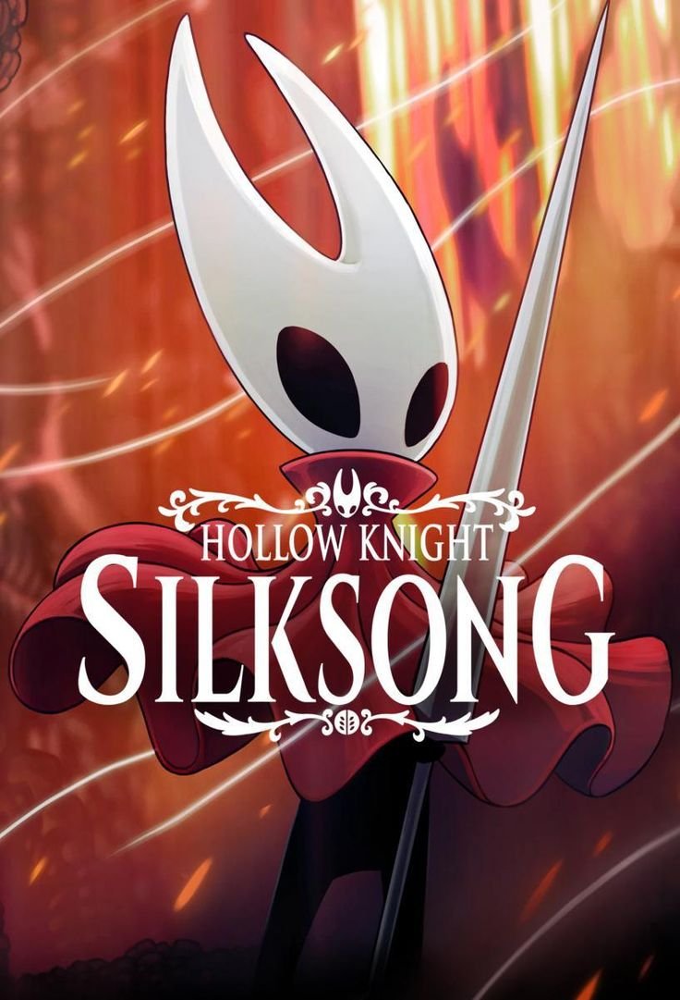
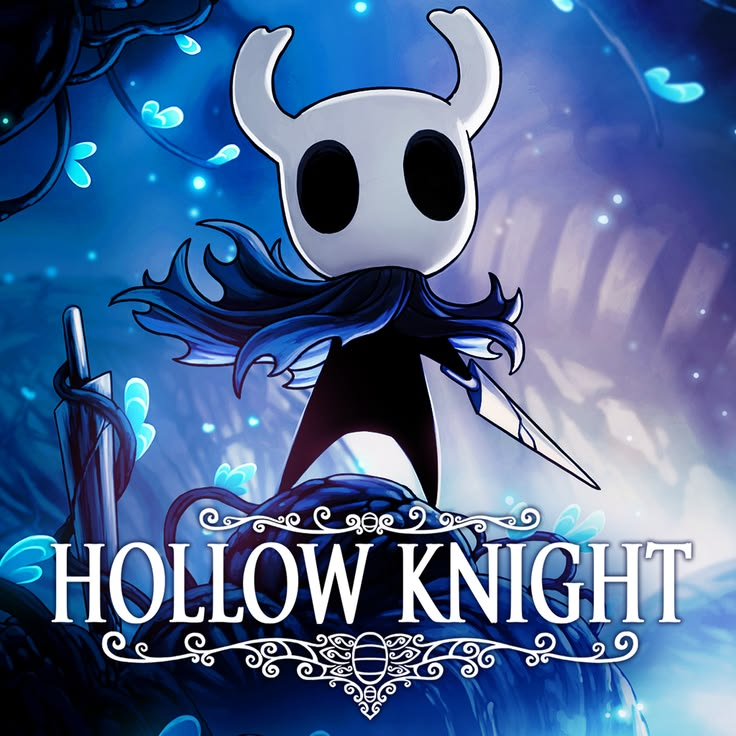
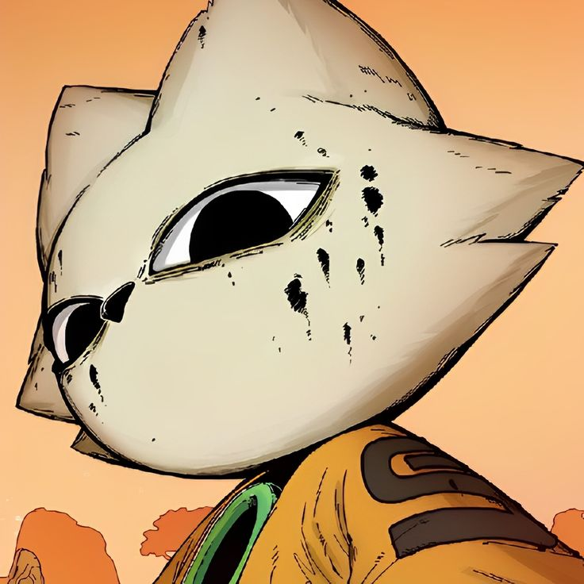
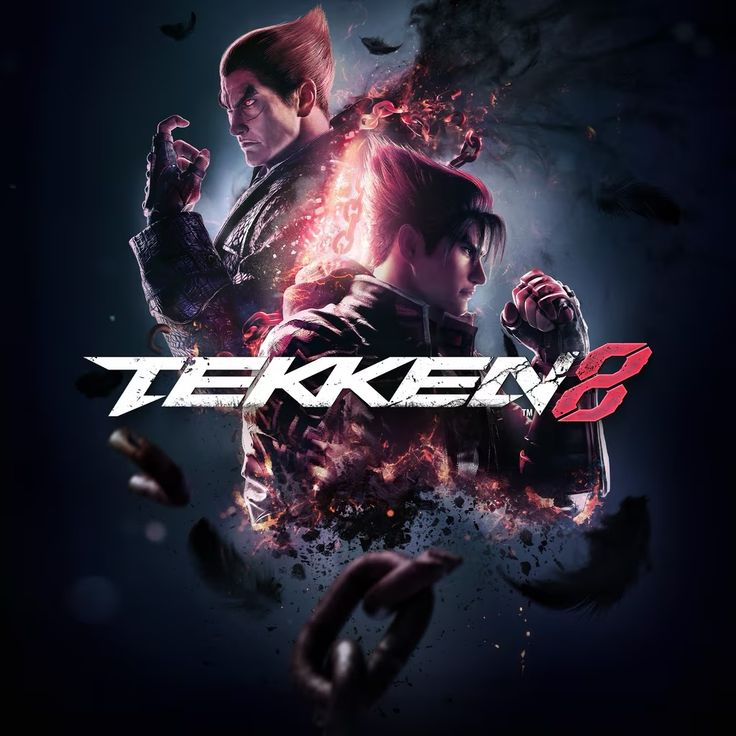

/games i like

Hollow Knight: Silksong
Hollow Knight: Silksong is a 2025 Metroidvania game developed and published by Australian independent developer Team Cherry. The sequel to Hollow Knight (2017), the story follows Hallownest's former princess-protector, Hornet—a major secondary character in Hollow Knight—after she is captured and transported to the unfamiliar land of Pharloom. Gameplay sees the player navigating through the large, interconnected areas of this kingdom, where they must battle enemies, traverse platforming challenges, and complete quests using various skills, tools, and movement mechanics.

Hollow Knight
Hollow Knight is a 2017 Metroidvania video game developed and published by Australian independent development studio Team Cherry. The player controls a nameless insectoid warrior (commonly known as "The Knight"[a][1]) in exploring Hallownest, a fallen kingdom plagued by a supernatural disease. The game is set in diverse subterranean locations, featuring friendly and hostile insectoid characters and numerous bosses. Players have the opportunity to unlock abilities as they explore, along with pieces of lore and flavour text that are spread throughout the kingdom.

NineSouls
Nine Sols[a] is a 2024 action-platform game developed and published by Red Candle Games. The game is set in an Asian fantasy-inspired futuristic world which Red Candle Games describes as "taopunk", a combination of Taoism and cyberpunk, stating that they "had a clear goal of combining Taoism with cyberpunk, melding sci-fi elements with Eastern mythology."[2] The game features its own hand-drawn animation style, and was released on Microsoft Windows and macOS on May 29, 2024, followed by home console ports on November 26. [3] On the same day, a major patch was released, introducing a boss rush style game mode called "battle memories".

Elden ring
Elden Ring[b] is a 2022 action role-playing game directed by Hidetaka Miyazaki with worldbuilding provided by the American fantasy writer George R. R. Martin. Developed by FromSoftware and published by Bandai Namco Entertainment, it was first released on February 25, 2022, for PlayStation 4, PlayStation 5, Windows, Xbox One, and Xbox Series X/S with a Nintendo Switch 2 version released on August 28, 2026. Set in the Lands Between, players control a customizable player character on a quest to repair the Elden Ring and become the new Elden Lord.

tekken 8
Tekken 8 (Japanese: 鉄拳8) is a 2024 fighting game developed by Bandai Namco Studios and Arika[1] and published by Bandai Namco Entertainment. It is the eighth main installment (and tenth overall entry) in the Tekken series and the first one to debut on home systems instead of arcades.[2] Game tests were held starting in July 2023 before the game was released for the PlayStation 5, Windows, and Xbox Series X/S on January 26, 2024.
/tech stack
tools & technology
HTML5
web main structure
CSS3
styling & layout
JavaScript
logic & web interaction
Git
version control
GitHub
colaboration & hosting repo
Linux
main os for developing & server
Docker
container & deployment
Figma
ui desain
python
automation & scripting
mysql/mariadb
dbms
/about me
yo! this is me
okay that is all about me, hope you enjoy my personal page and may papa gaben grant u a discount on your wishlisted game on steam. and if u intrested in silksong dont be shy and let me guide u to path of happiness, just dont be crazy just because u die a lot in bilewater. FYI bilewater is my favorite place in silksong, jk i hate it as same as i hate israel. i love shakra, i love sherma a lot, i hate netanyahu and trump.
IT Student at Darrusalamm University, focusing DevOps
in progress
Web Programming (HTML, CSS, JavaScript) & Linux
hobbies
Metroidvania, Soulsbourne, Fighting Games
goal
become a sigma, alpha, nonchalant pirate king